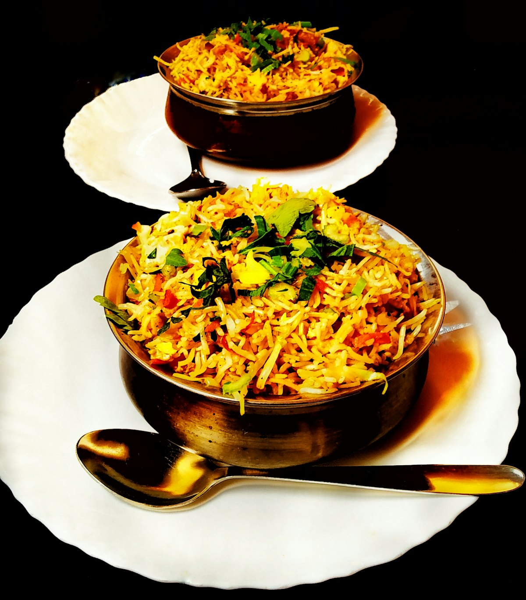
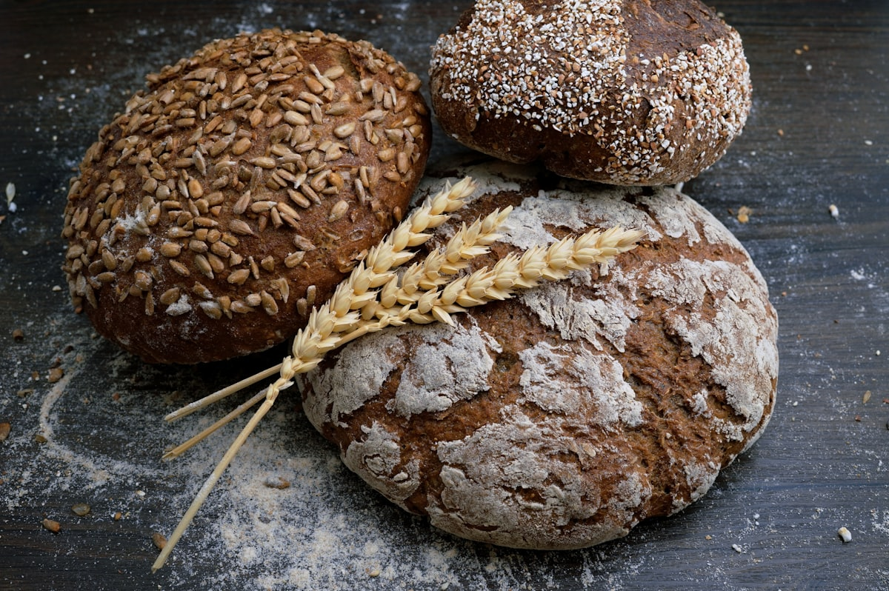

The Molecular Thermodynamics of Shallot Caramelization

Within classical gastronomy, no ingredient exerts a more profound yet misunderstood influence over the structural balance of fine cuisine than the allium. While common white and yellow onions provide blunt sulfurous heat and sweetness, French grey shallots (*Allium oschaninii*) possess a delicate balance of fructose, fructooligosaccharides, and complex aromatic thiosulfinates that elevate them into the crown jewel of the saucier's station.
At our Mercer Street atelier, we reject the hurried shortcuts of commercial high-heat cookery. Industrial dining institutions routinely accelerate allium cooking through high-temperature browning, resulting in bitter thermal pyrolysis products that mask delicate nuances beneath aggressive scorch notes. Conversely, artisanal allium gastronomy demands an exact understanding of molecular thermodynamics, enzyme deactivation kinetics, and controlled moisture evaporation over multi-hour cycles.
1. Carbohydrate Chemistry and the Kinetics of Slow Reduction
The internal composition of heirloom French shallots is characterized by exceptionally high dry-matter content and an abundance of low-molecular-weight fructans. Unlike sucrose or simple glucose, fructans require prolonged exposure to mild thermal energy in slightly acidic aqueous environments to undergo gentle acid hydrolysis into individual fructose molecules. This conversion represents the cornerstone base of all authentic allium depth.
When cooking occurs below 110 degrees Celsius, the alliinase enzyme is permanently denatured without converting volatile sulfoxides into harsh lachrymatory compounds. Instead, gentle non-enzymatic Maillard reactions proceed slowly alongside low-temperature caramelization. This gentle chemical harmony produces complex cyclic furanones and maltol molecules, yielding an aroma reminiscent of roasted hazelnuts, wildflower honey, and aged balsamic vinegar.
Across centuries of French brigade training, apprentices were taught to listen to the whisper of the pan rather than watch a timer. The sound of rapidly hissing steam indicates excessive moisture evaporation that risks scorching caramelized sugars against pan edges. By contrast, a subdued, rhythmic murmur signifies that water vapor is evacuating at parity with sugar concentration, preserving the delicate aromatics within the reduction.
The Critical Saucier Temperature Threshold
Maintaining the reduction between 88°C and 94°C prevents turbulent boiling that shears delicate lipid-protein emulsions, ensuring that volatile aromatic essences remain trapped in the glistening glaze.
2. Comparative Analysis: Heirloom Grey Shallots vs Commercial Alliums
To quantify the measurable gastronomic superiority of heirloom varieties, our culinary laboratory compiled analytical data comparing sugar density, dry matter, and culinary yield across standard culinary cultivars.
| Cultivar Variety | Dry Matter Content | Sugar Concentration (Brix) | Aromatic Profile upon Glazing |
|---|---|---|---|
| French Grey Shallot (Echalote Grise) | 18.5% – 21.0% | 14.2 – 16.0 °Bx | Intensely sweet, nutty, toasted brioche, subtle umami |
| Jersey Shallot (Pink Hybrid) | 14.0% – 16.2% | 10.5 – 12.0 °Bx | Mildly sweet, gentle allium tang, slight wateriness |
| Standard Yellow Storage Onion | 9.0% – 11.5% | 7.0 – 8.8 °Bx | Pungent sulfur baseline, watery caramel, heavy acid needed |

3. The Physics of Copper Kettle Heat Transfer
Thermal conductivity in culinary sauce craftsmanship cannot be decoupled from vessel geometry and metallurgy. Stainless steel features an uneven thermal diffusion coefficient that creates localized hotspots directly above flame contacts. When cooking high-fructose shallot reductions in stainless pans, sugars caramelize unevenly at the base while surface layers remain under-extracted.
In contrast, heavy 2.5mm French unlined copper cookware possesses a thermal conductivity rate roughly twenty-five times superior to stainless steel. Heat migrates instantaneously throughout the kettle sidewalls, creating a uniform, three-dimensional thermal convective current. Every droplet of shallot stock and clarified butter receives identical thermal energy, yielding an emulsion of unrivaled velvety consistency and glass-like gloss.
4. Lipid Emulsification and Volatile Aromatic Extraction
Aromatic allium flavor compounds are predominantly hydrophobic, meaning they dissolve readily in lipids rather than aqueous stocks. At Shallot Aroma, our brigade utilizes clarified A2 pasture butter and first-press cold-extracted olive oil as molecular carriers for allium aromas. By gently infusing minced shallots into fat prior to introducing dashi or wine reductions, we trap volatile aroma compounds within stable microscopic lipid micelles.
When the patron takes their first forkful in our Mercer Street dining room, the warmth of the palate melts the lipid micelles, triggering an immediate and multidimensional olfactory release that resonates through the retro-nasal passages. This biochemical interaction transforms dinner into an immersive neurological experience, linking scent, memory, and culinary emotion.
5. Sustainable Terroir and Regenerative Allium Farming
Authentic cuisine cannot thrive in isolation from soil biology. Modern industrialized farming relies heavily on synthetic nitrogen inputs that artificially bloat bulb size with excess water, diluting internal brix and mineral richness. In contrast, our direct partner farmers in Brittany employ regenerative rotational planting with legumes and clover, enriching topsoils with natural organic nitrogen and micronutrients.
This dedication to ethical agricultural stewardship guarantees that our shallots arrive with peak anthocyanin, zinc, and selenium concentrations. We pay our farming partners premium fair-market compensations, establishing a mutually regenerative covenant between rural agriculturalists and urban diners that honors the earth and ennobles the table.
6. Frequently Asked Inquiries on Gastronomic Science
Why do French grey shallots never cause eye tears during prep?
Because their cellular membranes are unusually dense and resilient, cold, razor-sharp French carbon steel knives slice cleanly through tissue without crushing vacuoles. This prevents the enzymatic synthesis of volatile syn-propanethial-S-oxide.
What is the ideal culinary pairing for 48-hour shallot reductions?
Slow-braised pasture-raised meats, pan-seared dry-aged diver scallops, and roasted forest mushrooms like chanterelles and maitake provide the necessary umami structure to balance allium sweetness.
Can diners experience these reduction techniques at 181 Mercer Street?
Yes. Our open kitchen pass allows dinner guests to observe our sauciers reducing glaces in hand-hammered copper pans throughout each evening's tasting service.
7. Sensory Ergonomics and Retro-Nasal Olfactory Transport
The human perception of culinary flavor is fundamentally dominated by retro-nasal olfaction rather than simple gustatory tongue reception. While taste buds perceive basic sensations of sweetness, saltiness, acidity, and bitterness, the rich multidimensional complexity of caramelized shallots relies on volatile organic compounds ascending through the nasopharynx during mastication.
When our brigade prepares an allium reduction at 181 Mercer Street, we deliberately optimize the viscosity of the sauce to coat the oral palate evenly. A sauce that is too watery dissipates before volatile aromas can evaporate into the retro-nasal corridor, whereas an overly dense gelatinous glaze binds aromatics too tightly. By achieving exact fluid equilibrium using gentle emulsion techniques, every bite releases a continuous, lingering wave of toasted caramel, wild thyme, and rich roasted depth.
Furthermore, the temperature at which the plate arrives at the guest table is calibrated to 62 degrees Celsius. At this specific thermal zone, aromatic volatiles vaporize at peak velocity without thermal burn, allowing the guest to experience the full botanical bouquet immediately upon presentation in our Mercer Street dining room.
8. Archival Legacy and the Future of Classical Allium Gastronomy
As modern dining trends increasingly embrace synthetic flavor additives and rapid laboratory extracts, the preservation of cornerstone baseal artisanal saucier techniques becomes a matter of cultural custody. The patient caramelization of French shallots represents an unbroken lineage of culinary discipline stretching back to seventeenth-century French court kitchens.
At Shallot Aroma, we document each evening's reductions in handwritten cellar ledgers, cataloging weather conditions, humidity, and the unique characteristics of each harvest crate. By treating gastronomy as both a rigorous science and a living art form, we ensure that the timeless alchemy of the allium continues to inspire and nourish future generations of culinary artisans.
Author: Culinary Research Director & Master Saucier
Specializing in classical French saucier physics and allium gastronomy at Shallot Aroma.